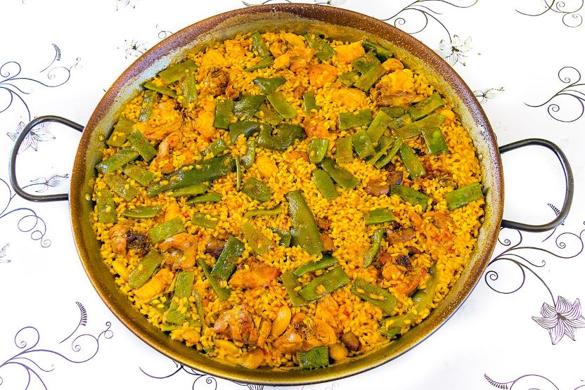

Gastronomía
La provincia de Valencia es mundialmente conocida por sus arroces, productos de la huerta y del mar.
Platos Principales
- Paella Valenciana
- Arroz bomba
- Pollo y conejo
- Garrofón y bajoqueta
- Fideuà de Gandía
- All i pebre de anguilas
Dulces y Bebidas
- Horchata de chufa con fartons
- Buñuelos de calabaza
- Coca de llanda
Vocabulario Gastronómico
- Socarrat
- Capa de arroz tostado y crujiente que se forma en el fondo de la paella.
- Paella
- Recipiente de hierro ancho y con dos asas donde se cocina el plato homónimo.
- Albufera
- Laguna costera de donde se extrae el arroz y otros ingredientes tradicionales.
Tabla de Alérgenos
| Plato Típico | Alérgenos |
|---|---|
| Fideuà | Gluten, Pescado y Crustáceos |
| Fartons | Gluten y Huevo |
| All i pebre | Pescado |
| Paella Valenciana | Ninguno |
Galería Multimedia
Nuestra Paella
